Kubernetes + Adapter Pattern + Minikube
- Run a voting application using an express website and redis
- Run locally using docker images and docker-compose
- Run locally using minikube
- Explore the Adapter pattern
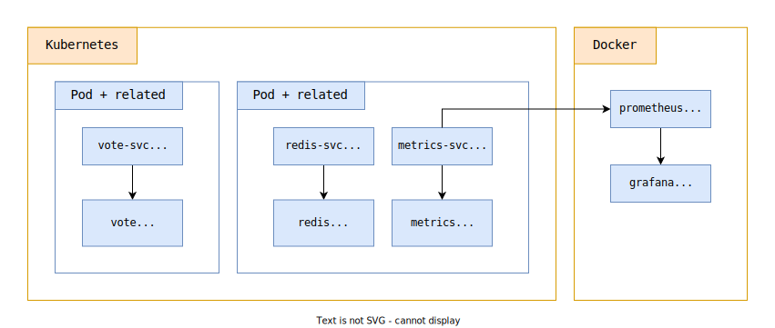
Setup the project
Get the code from this github repository :
# download the code
$ git clone \
--depth 1 \
https://github.com/jeromedecoster/k8s-adapter-pattern.git \
/tmp/note
# cd
$ cd /tmp/note
The Adapter pattern
The Adapter pattern is the third of the structural models described in the Bilgin Ibryam and Roland Huß book
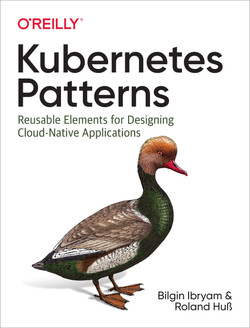
Kubernetes manages pods instead of containers and pods encapsulate containers. A pod may contain one or more containers.
A pod that contains one container refers to a single container pod and it is the most common kubernetes use case.
A pod that contains Multiple co-related containers refers to a multi-container pod.
The adapter pattern is a specialization of the sidecar pattern.
It is used to transform one content to another, usually :
- The main container generates outputs (logs or other).
- The adapter container reads these outputs and generates new content for specific software. The output is formatted, adapted.
Adapter containers are typically used to generate monitoring metrics from logs or another data sources.
For example generate metrics usable by Prometheus.
Exploring the project
The project is a simple voting application. A website that uses a Redis database.
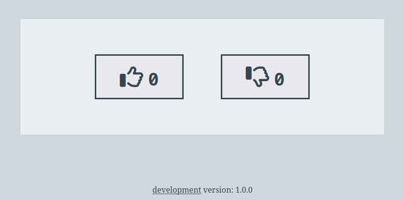
We reuse and modify the Init Container Pattern demo project.
The goal of this demo is to generate a metrics file suitable for Promotheus to display the evolution of up and down data coming from Redis.
We can then follow these developments via a nice Grafana dashboard.
The metrics container is added as an adapter container. It’s an express server that collects Redis data and returns it at the URL /metrics.
This small server is used for our demonstration. But in reality one will use as adapt a redis-exporter. It is a ready-to-use docker image. It comes from this git repository.
Here is the classic usage of exporting redis datas within a kubernetes manifest :
spec:
containers:
- name: redis
image: redis
resources:
requests:
cpu: 100m
memory: 100Mi
ports:
- containerPort: 6379
- name: redis-exporter
image: oliver006/redis_exporter:latest
resources:
requests:
cpu: 100m
memory: 100Mi
ports:
- containerPort: 9121
The use of this exporter is not the subject of this article.
Running the project
We start the project :
# run redis alpine docker image
$ make redis
This command runs this script :
$ docker run \
--rm \
--name redis \
--publish 6379:6379 \
redis:alpine
We execute the following command in another terminal :
# run vote website using npm - dev mode (livereload + nodemon)
$ make vote
We open the URL http://localhost:4000/

Running Promethethus locally
We start Promethethus via its docker image :
# run prometheus
$ make prometheus
This command runs this script :
# run prometheus
$ docker run \
--network host \
--volume $(pwd)/prometheus.yaml:/etc/prometheus/prometheus.yaml \
prom/prometheus \
--config.file=/etc/prometheus/prometheus.yaml
Prometheus is configured with the prometheus.yaml file defining its metric harvesting parameters :
scrape_configs:
- job_name: 'local'
scrape_interval: 10s
static_configs:
- targets:
- '0.0.0.0:5000' # to work with make prometheus + metrics
- 'metrics:5000' # to work with make docker-compose
- '192.168.49.2:32000' # minikube
We open http://localhost:9090/
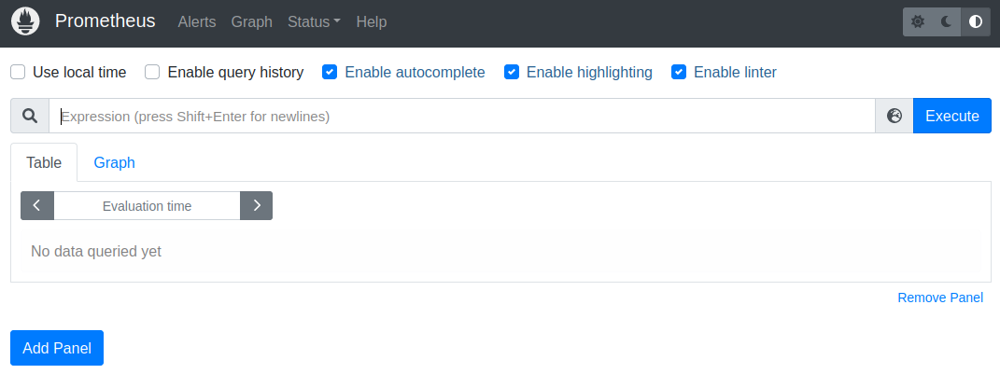
Prometheus is working fine but for now it is not retrieving any data :
We see http://localhost:9090/service-discovery
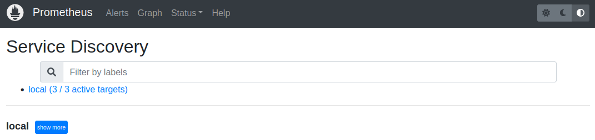
The targets defined by the prometheus.yaml file currently have a status down :
We open http://localhost:9090/targets
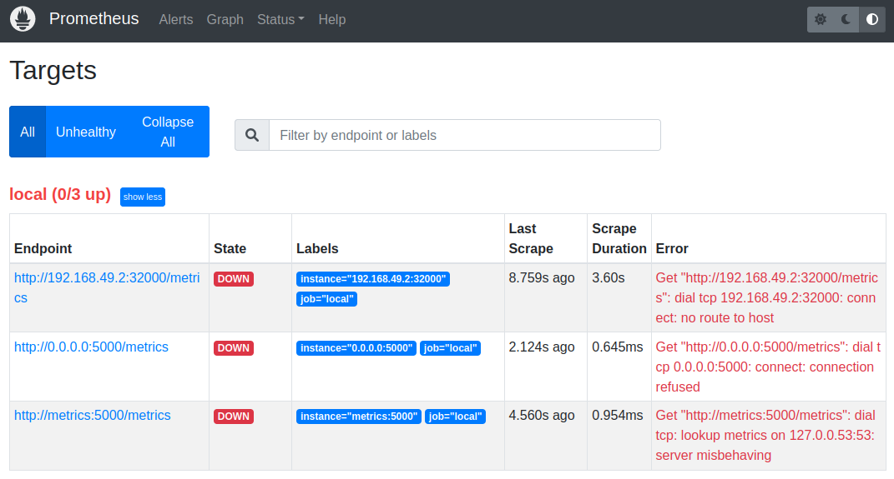
Enable metrics
In a new terminal window :
# run metrics server using npm
$ make metrics
This command starts the node server which collects up and down data from Redis and returns it to the URL /metrics :
const app = express()
const redis = new Redis({
port: 6379,
host: REDIS_HOST
})
// ...
const up_gauge = new client.Gauge({
name: 'up_gauge',
help: 'Number of up.'
})
app.get('/metrics', async (req, res) => {
let up = await redis.get('up')
up_gauge.set(Number(up))
res.set('Content-Type', client.register.contentType)
res.end(await client.register.metrics())
})
We open http://localhost:5000/metrics
We now see our exported metrics :
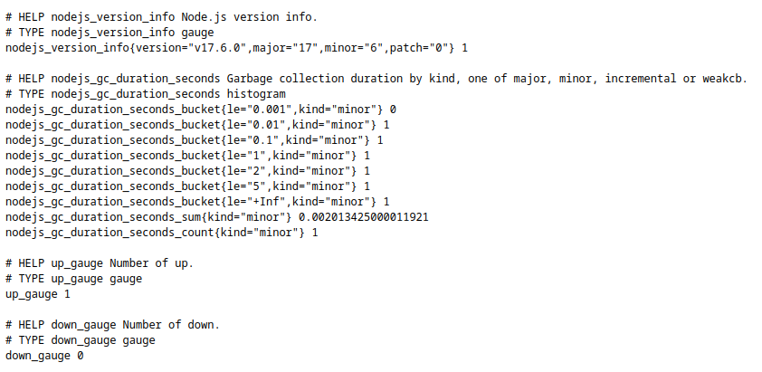
By reloading http://localhost:9090/targets we can see that Prometheus now manages to collect this data :
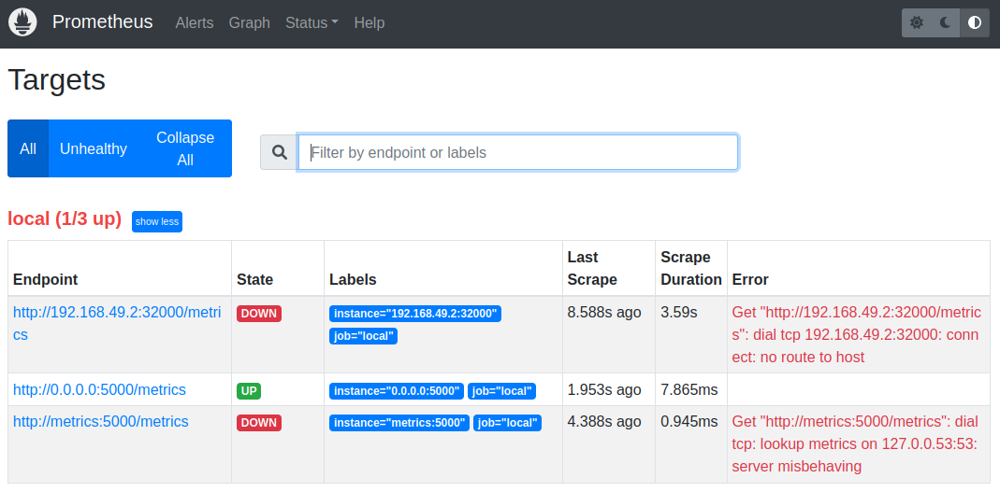
We can display two graphs of our data
http://localhost:9090/graph?g0.expr=up_gauge :
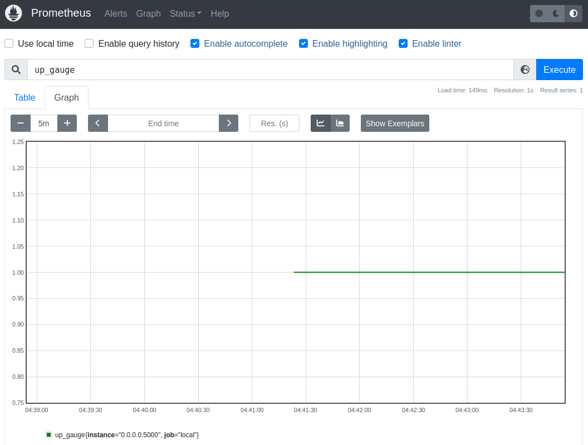
When we interact with the website :
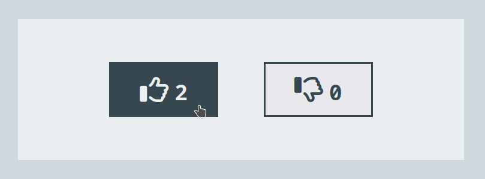
By reloading our graphs page we see the update :
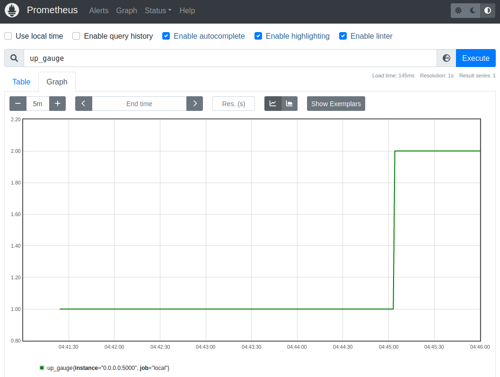
Visualize in Grafana
We start the docker image of grafana :
# run grafana
$ make grafana
This command runs this script :
# run grafana
$ docker run \
--network host \
--env GF_AUTH_BASIC_ENABLED=false \
--env GF_AUTH_ANONYMOUS_ENABLED=true \
--env GF_AUTH_ANONYMOUS_ORG_ROLE=Admin \
grafana/grafana
We open http://localhost:3000
Grafana is working but not configured yet :
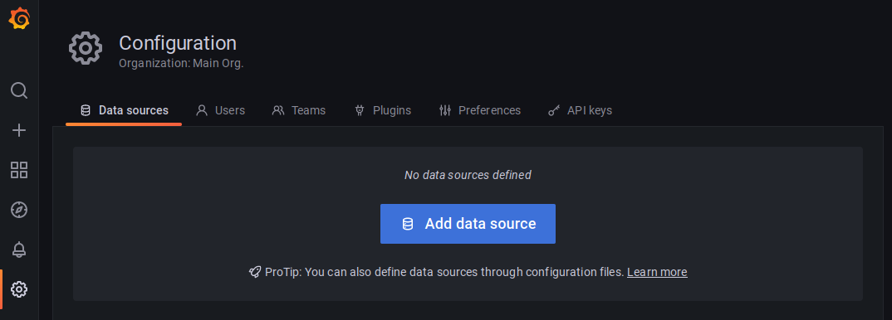
To configure Grafana, we run this command in a new terminal window :
# configure grafana
$ make configure
This command runs this script :
# add datasource
$ curl http://localhost:3000/api/datasources \
--header 'Content-Type: application/json' \
--data '{ "name": "Prometheus", "type": "prometheus", "access": "proxy", "url": "http://localhost:9090", "basicAuth": false, "isDefault": true }'
# add my-dashboard
$ curl http://localhost:3000/api/dashboards/db \
--header 'Content-Type: application/json' \
--data @my-dashboard.json
The dashboard is a verbose JSON file :
{
"overwrite": true,
"dashboard": {
"__inputs": [
{
"name": "DS_PROMETHEUS",
"label": "Prometheus",
"description": "",
"type": "datasource",
"pluginId": "prometheus",
"pluginName": "Prometheus"
}
],
"__requires": [
{
"type": "panel",
"id": "gauge",
"name": "Gauge",
"version": ""
},
{ "...": "..." }
],
"...": "...",
"timezone": "browser",
"title": "My dashboard",
"variables": {
"list": []
},
"uid": "cT-ufiKGz",
"version": 1
}
}
By reloading http://localhost:3000/datasources
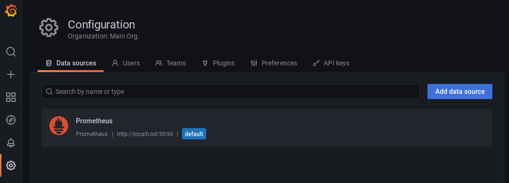
We access our dashboard via the menu :
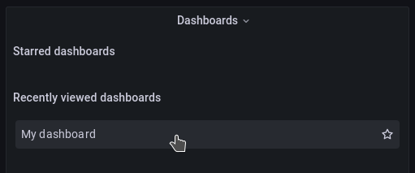
The dashboard works correctly :
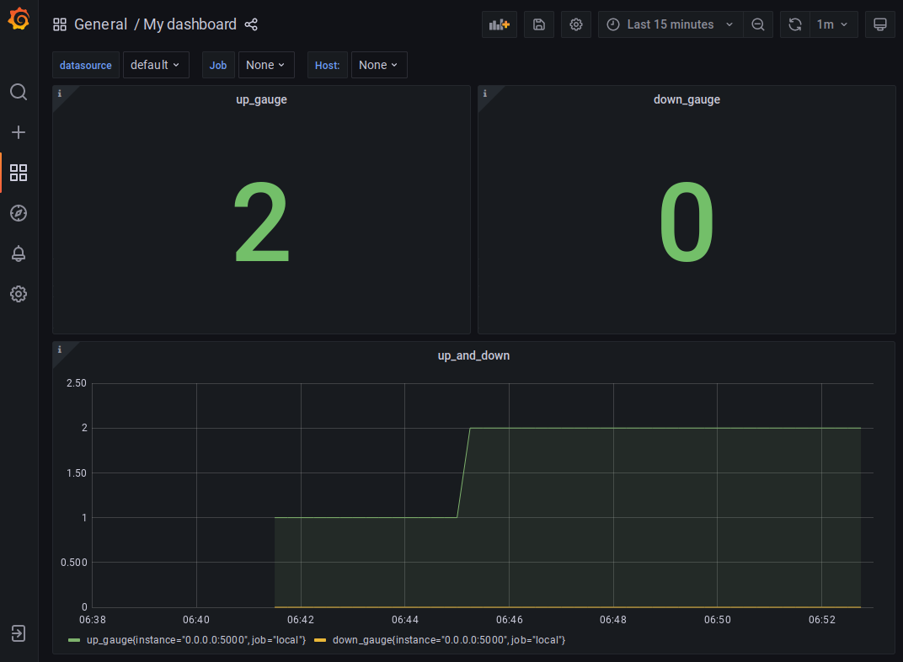
This part of the demo is complete. We can close all instances running in our different terminals.
Local test using docker-compose
Before testing in minikube, it’s a good idea to use docker-compose to orchestrate the containers that make up the application locally. It’s a good step.
The docker-compose.dev.yml file starts to grow to a certain size :
services:
vote:
build:
context: ./vote
dockerfile: Dockerfile.dev
args:
- NODE_ENV=development
- WEBSITE_PORT=4000
volumes:
- "./vote:/app"
ports:
- "4000:4000"
- "35729:35729"
networks:
- backend
depends_on:
- redis
redis:
image: redis:alpine
ports:
- "6379:6379"
networks:
- backend
metrics:
build:
context: ./metrics
dockerfile: Dockerfile.dev
args:
- NODE_ENV=development
- SERVER_PORT=5000
- REDIS_HOST=redis
volumes:
- "./metrics:/app"
ports:
- "5000:5000"
networks:
- backend
prometheus:
container_name: prometheus
image: prom/prometheus
ports:
- "9090:9090"
command: --config.file=/etc/prometheus/prometheus.yaml
volumes:
- ./prometheus.yaml:/etc/prometheus/prometheus.yaml
networks:
- backend
grafana:
container_name: grafana
image: grafana/grafana
ports:
- "3000:3000"
environment:
- GF_AUTH_BASIC_ENABLED=false
- GF_AUTH_ANONYMOUS_ENABLED=true
- GF_AUTH_ANONYMOUS_ORG_ROLE=Admin
networks:
- backend
grafana-setup:
container_name: grafana-setup
image: alpine:3.10
depends_on:
- grafana
volumes:
- ./datasource.json:/etc/grafana/datasource.json
- ./my-dashboard.json:/etc/grafana/my-dashboard.json
command: >
/bin/sh -c "
apk add --no-cache curl
cd /etc/grafana/
sleep 10
until nc -vz grafana 3000 ; do echo 'Waiting for grafana' ; sleep 5 ; done
sleep 5
curl --silent http://grafana:3000/api/datasources
echo
curl http://grafana:3000/api/datasources \
--header 'Content-Type: application/json' \
--data @datasource.json
curl http://grafana:3000/api/dashboards/db \
--silent \
--header 'Content-Type: application/json' \
--data @my-dashboard.json"
networks:
- backend
networks:
backend: {}
Note above the use of a grafana-setup service which uses an alpine:3.10 image to configure grafana with a command shell script.
Note that the command waits for grafana to be available with this line using nc :
$ until nc -vz grafana 3000 ; do echo 'Waiting for grafana' ; sleep 5 ; done
Run the following command :
# run the project using docker-compose (same as redis + vote + ...)
$ make compose-dev
This command runs this script :
$ export COMPOSE_PROJECT_NAME=k8s_adapter
$ docker-compose \
--file docker-compose.dev.yml \
up \
--remove-orphans \
--force-recreate \
--build \
--no-deps
We open http://localhost:4000/
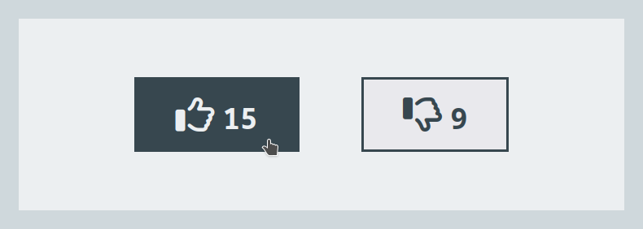
We open http://localhost:5000/metrics
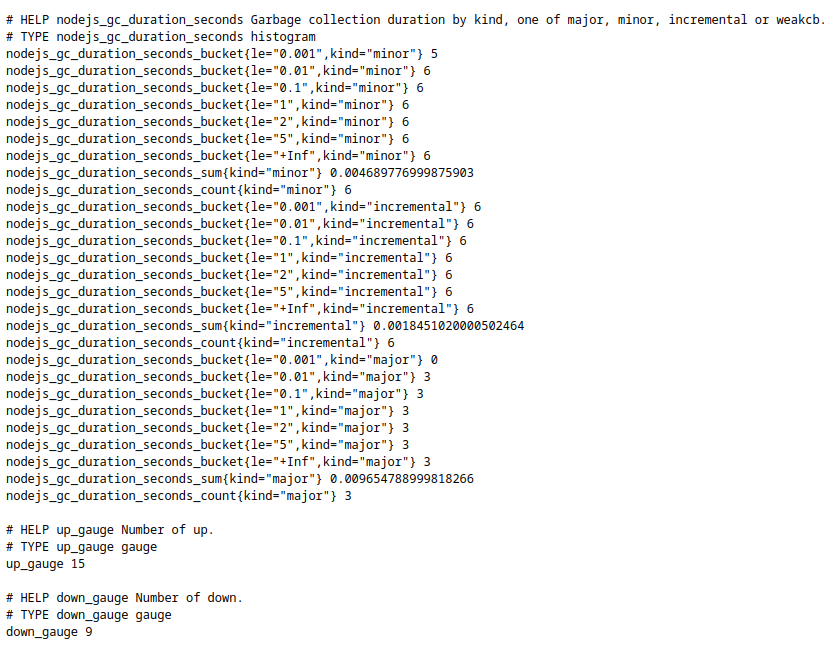
And the dashboard http://localhost:3000/d/cT-ufiKGz/my-dashboard :
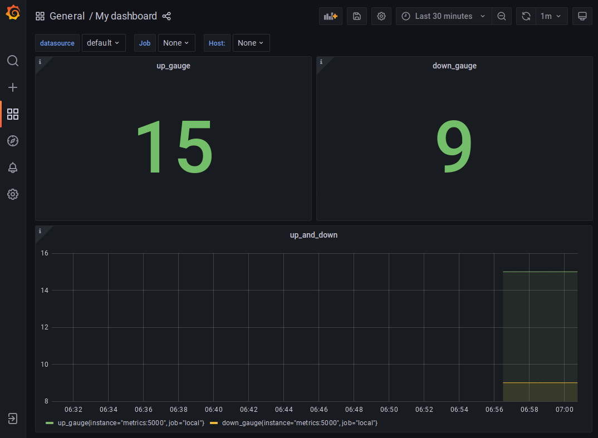
This part of the demo is complete. You can end the docker-compose process with Ctrl+C.
Using minikube
We start minikube :
$ minikube start --driver=docker
If minikube won’t start with a PROVIDER_DOCKER_NOT_RUNNING error or another error, try a hard reset :
$ minikube delete -p minikube
We check the context :
$ kubectl config current-context
minikube
We launch the Kubernetes dashboard in a new terminal window :
# new terminal window
$ minikube dashboard
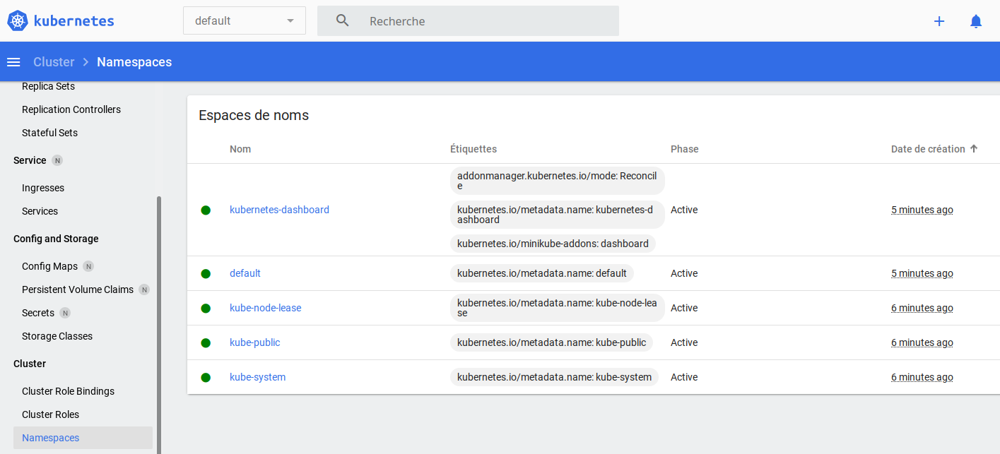
We create the kubernetes namespace with the ns.yaml template :
$ kubectl apply -f k8s/ns.yaml
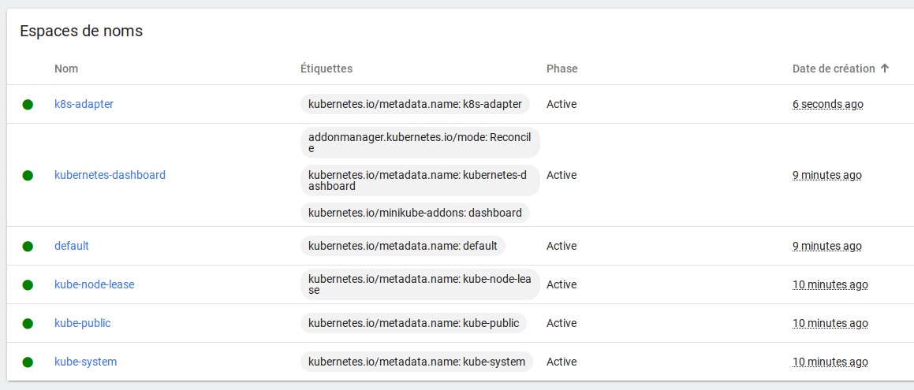
Target the local docker registry :
$ eval $(minikube -p minikube docker-env)
Rebuild the docker images in this registry :
# /!\ must be in the same terminal window than previous command
# build the site + metrics docker image
$ make docker-build
We now launch the redis instance with the redis.yaml template :
$ kubectl apply -f k8s/redis.yaml
The Redis manifest defines the multi-container pod. It contains a redis:alpine image and our metrics:latest adapter container :
apiVersion: apps/v1
kind: Deployment
metadata:
name: redis-deploy
namespace: k8s-adapter
spec:
replicas: 1
selector:
matchLabels:
app: redis
role: mem-cache
template:
metadata:
labels:
app: redis
role: mem-cache
spec:
containers:
- name: redis
image: redis:alpine
ports:
- name: redis
containerPort: 6379
- name: metrics
image: metrics:latest
env:
- name: SERVER_PORT
value: "5000"
- name: REDIS_HOST
value: "localhost"
ports:
- containerPort: 5000
name: metrics
imagePullPolicy: Never
The deployment is a success :
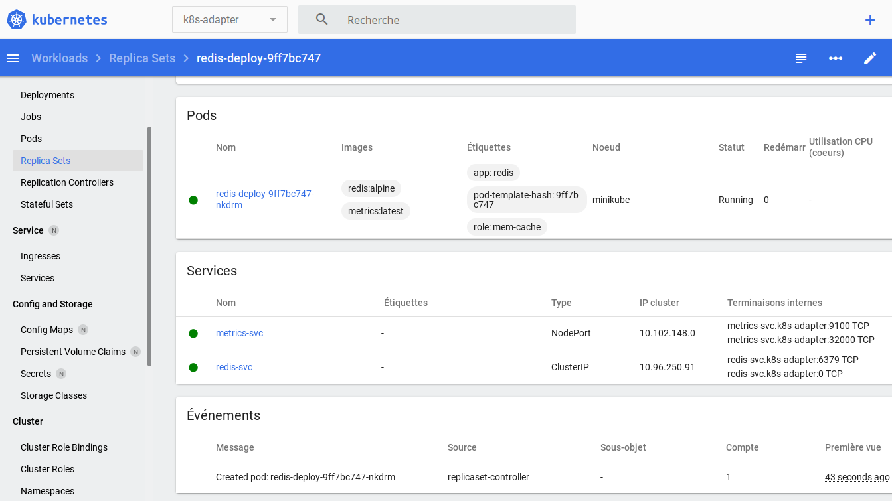
To access the service, we get its URL :
$ minikube service list --namespace k8s-adapter
|----------------------|---------------------------|--------------|---------------------------|
| NAMESPACE | NAME | TARGET PORT | URL |
|----------------------|---------------------------|--------------|---------------------------|
| k8s-adapter | metrics-svc | metrics/9100 | http://192.168.49.2:32000 |
| k8s-adapter | redis-svc | No node port |
|----------------------|---------------------------|--------------|---------------------------|
Metrics can be accessed at http://192.168.49.2:32000/metrics
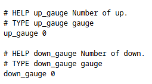
We apply the vote.yaml template :
$ kubectl apply -f k8s/vote.yaml
To access the service, we get its URL :
$ minikube service list --namespace k8s-adapter
|-------------|-------------|--------------|---------------------------|
| NAMESPACE | NAME | TARGET PORT | URL |
|-------------|-------------|--------------|---------------------------|
| k8s-adapter | metrics-svc | metrics/9100 | http://192.168.49.2:32000 |
| k8s-adapter | redis-svc | No node port |
| k8s-adapter | vote-svc | 9000 | http://192.168.49.2:31000 |
|-------------|-------------|--------------|---------------------------|
The vote website is accessed at http://192.168.49.2:31000
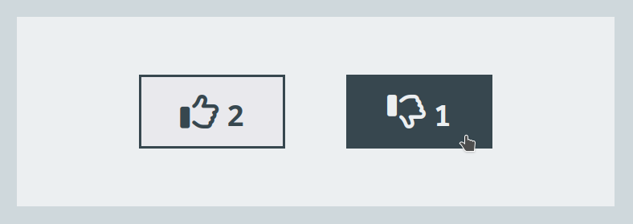
To complete our tests, we will use Prometheus and Grafana.
To simplify this demonstration, they will not be launched within minikube.
Launching and configuring these 2 software within Kubernetes is not a simple task.
This is one of the disadvantages of Kubernetes : some tasks become over-engineered.
We start Prometheus :
# run prometheus
$ make prometheus
We open http://localhost:9090/
Prometheus is configured with the prometheus.yaml file with the following targets :
scrape_configs:
- job_name: 'local'
scrape_interval: 10s
static_configs:
- targets:
- '0.0.0.0:5000' # to work with make prometheus + metrics
- 'metrics:5000' # to work with make docker-compose
- '192.168.49.2:32000' # minikube
We can see that the target works :
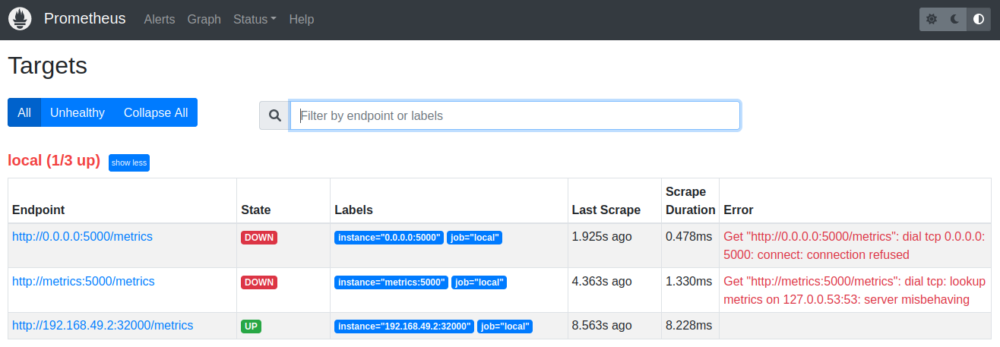
We launch grafana via a new terminal window :
# run grafana
$ make grafana
Grafana is currently not defined. There is no datasources :
We add a datasource with this command line :
$ curl http://localhost:3000/api/datasources \
--header 'Content-Type: application/json' \
--data '{ "name": "Prometheus", "type": "prometheus", "access": "proxy", "url": "http://localhost:9090", "basicAuth": false, "isDefault": true }'
it is a success :
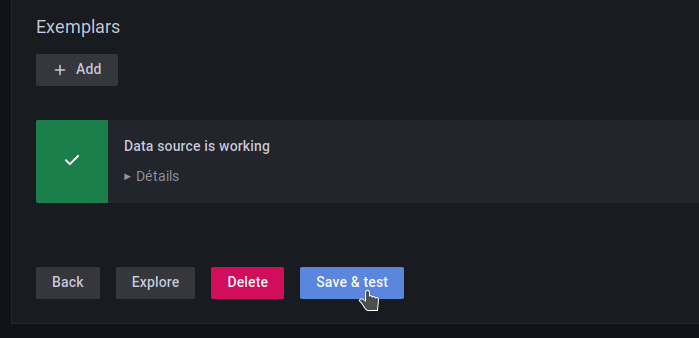
We add the dashboard with this command line :
$ curl http://localhost:3000/api/dashboards/db \
--header 'Content-Type: application/json' \
--data @my-dashboard.json
We open the dashboard :
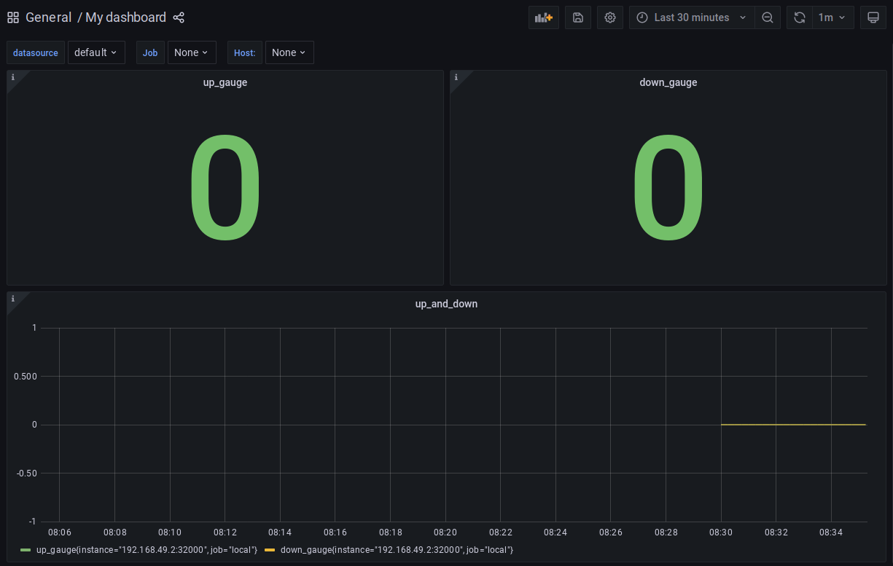
You can vary the values from the website :
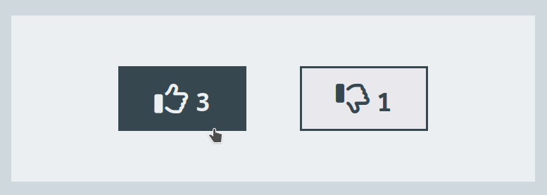
We see the update :
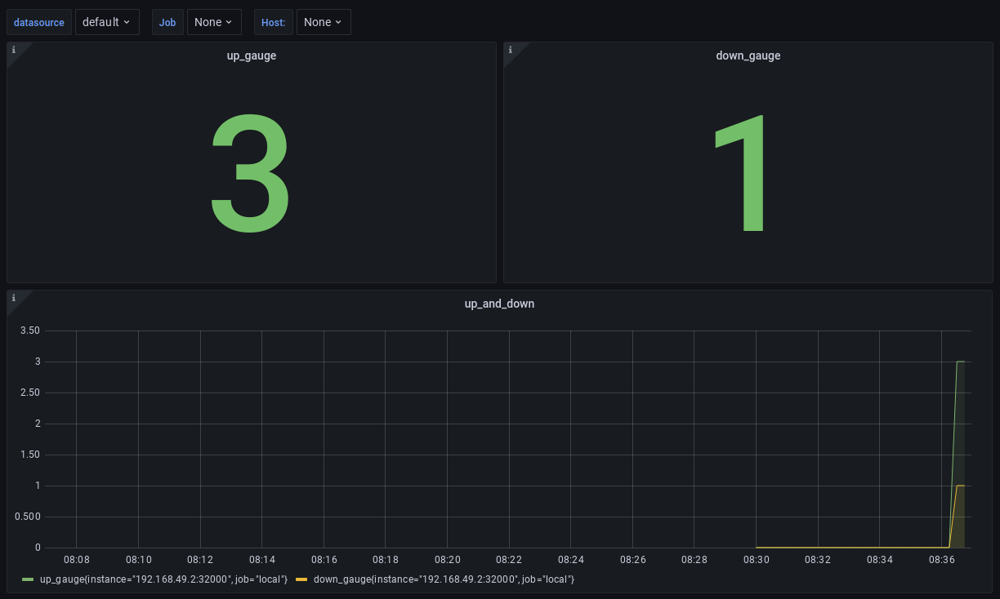
The demonstration is over, we can destroy our resources.